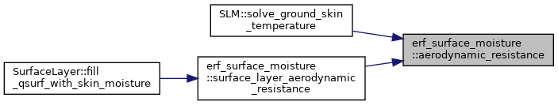
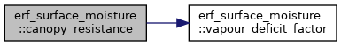
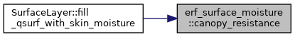
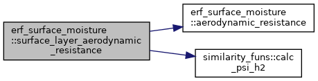
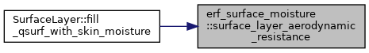
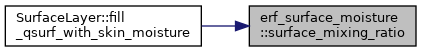
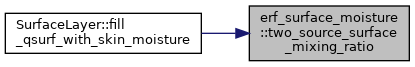
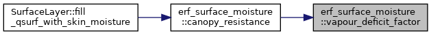

- Generated by
 1.9.1
1.9.1
|
ERF
Energy Research and Forecasting: An Atmospheric Modeling Code
|
Enumerations | |
| enum | Component : int { SoilFactor = 0 , VegetationFraction , CanopyResistanceWithoutVPD , SoilResistance , GroundRelativeHumidity , NumComponents } |
Functions | |
| AMREX_GPU_HOST_DEVICE AMREX_FORCE_INLINE amrex::Real | surface_mixing_ratio (const amrex::Real beta, const amrex::Real q_sat, const amrex::Real q_air) |
| AMREX_GPU_HOST_DEVICE AMREX_FORCE_INLINE amrex::Real | vapour_deficit_factor (const amrex::Real hs, const amrex::Real q_sat, const amrex::Real q_air) |
| AMREX_GPU_HOST_DEVICE AMREX_FORCE_INLINE amrex::Real | canopy_resistance (const amrex::Real r_c_without_vpd, const amrex::Real hs, const amrex::Real q_sat, const amrex::Real q_air) |
| AMREX_GPU_HOST_DEVICE AMREX_FORCE_INLINE amrex::Real | aerodynamic_resistance (const amrex::Real z_ref, const amrex::Real z0, const amrex::Real psi_h, const amrex::Real kappa, const amrex::Real u_star) |
| AMREX_GPU_HOST_DEVICE AMREX_FORCE_INLINE amrex::Real | surface_layer_aerodynamic_resistance (const similarity_funs &sfuns, const amrex::Real z_ref, const amrex::Real z0, const amrex::Real u_star, const amrex::Real olen, const amrex::Real wind, const amrex::Real wind_min, const amrex::Real kappa, const amrex::Real unset) |
| AMREX_GPU_HOST_DEVICE AMREX_FORCE_INLINE amrex::Real | two_source_surface_mixing_ratio (const amrex::Real r_a, const amrex::Real r_c, const amrex::Real r_soil, const amrex::Real f_veg, const amrex::Real q_sat, const amrex::Real rh_ground, const amrex::Real q_air) |
Variables | |
| constexpr amrex::Real | no_flux_resistance = amrex::Real(1.0e6) |
Pieces of the surface layer's land surface mixing ratio when the two-stream balance supplies the surface's moisture (erf.radiation.seb_surface_layer_uses_moisture): the surface evaporates at beta times the potential rate, and its mixing ratio is beta * q_sat + (1 - beta) * q_air. Without a soil type, beta is the soil-water factor. With one, the surface mixing ratio comes from two source fluxes instead (two_source_surface_mixing_ratio): bare soil evaporates from its pore air (RH q_sat) through its resistance, and with a vegetation type a canopy transpires from q_sat through its own, each in series with the aerodynamic resistance.
| enum erf_surface_moisture::Component : int |
Components of the per-column field the balance hands the surface layer (TwoStreamRadiation::seb_surface_moisture): the soil-water factor beta in [0, 1]; with a soil type, the bare-soil resistance [s/m] and the relative humidity of the bare soil's pore air; with a vegetation type as well, the vegetated fraction and the canopy resistance without its vapour-deficit factor [s/m]. Absent pieces are a fraction of 0, resistances of no_flux_resistance (1e6 s/m) and a relative humidity of 1.
| Enumerator | |
|---|---|
| SoilFactor | |
| VegetationFraction | |
| CanopyResistanceWithoutVPD | |
| SoilResistance | |
| GroundRelativeHumidity | |
| NumComponents | |
| AMREX_GPU_HOST_DEVICE AMREX_FORCE_INLINE amrex::Real erf_surface_moisture::aerodynamic_resistance | ( | const amrex::Real | z_ref, |
| const amrex::Real | z0, | ||
| const amrex::Real | psi_h, | ||
| const amrex::Real | kappa, | ||
| const amrex::Real | u_star | ||
| ) |
Aerodynamic resistance to the moisture flux between the surface and the reference height [s/m]: max(ln(z_ref / z0) - psi_h, 1) / (kappa u*).
This is the limited CmPsih of the surface layer's surface_temp kernel (ERF_MOSTStress.H), which uses z0 for heat and moisture too. Its q* is kappa (q_air - q_surf) / CmPsih, so the flux is u* q* = (q_air - q_surf) / r_a. u* is floored at 1e-3 m/s.
Referenced by SLM::solve_ground_skin_temperature(), and surface_layer_aerodynamic_resistance().

| AMREX_GPU_HOST_DEVICE AMREX_FORCE_INLINE amrex::Real erf_surface_moisture::canopy_resistance | ( | const amrex::Real | r_c_without_vpd, |
| const amrex::Real | hs, | ||
| const amrex::Real | q_sat, | ||
| const amrex::Real | q_air | ||
| ) |
The canopy resistance the surface layer uses [s/m]: the balance's resistance without the vapour-deficit factor (TwoStream's seb_canopy_resistance_without_vpd) divided by that factor, capped at no_flux_resistance after the divide (the factor alone can raise it 100-fold).
| [in] | r_c_without_vpd | canopy resistance without the vapour-deficit factor [s/m] |
| [in] | hs | the canopy's vapour-deficit parameter [1/(kg/kg)] |
| [in] | q_sat | saturation mixing ratio at the surface temperature [kg/kg] |
| [in] | q_air | mixing ratio of the air at the reference height [kg/kg] |
Referenced by SurfaceLayer::fill_qsurf_with_skin_moisture().


| AMREX_GPU_HOST_DEVICE AMREX_FORCE_INLINE amrex::Real erf_surface_moisture::surface_layer_aerodynamic_resistance | ( | const similarity_funs & | sfuns, |
| const amrex::Real | z_ref, | ||
| const amrex::Real | z0, | ||
| const amrex::Real | u_star, | ||
| const amrex::Real | olen, | ||
| const amrex::Real | wind, | ||
| const amrex::Real | wind_min, | ||
| const amrex::Real | kappa, | ||
| const amrex::Real | unset | ||
| ) |
The aerodynamic resistance [s/m] the surface layer's moisture flux sees over a land column whose skin temperature the two-stream balance gives it.
Skin coupling needs erf.most.surf_temp, so that flux comes from the surface_temp kernel. Its stability function is Jimenez's psi_h2 at z_ref / L (calc_psi_h2), not Businger-Dyer's psi_h, and it is limited as in aerodynamic_resistance.
The resistance uses the last u* and Obukhov length L. Before the first flux, u* is unset or non-finite, and a neutral first guess is used: u* = kappa max(U, U_min) / max(ln(z_ref / z0), 1), with psi_h2 = 0. An unset, non-finite or zero L also gives psi_h2 = 0.
Referenced by SurfaceLayer::fill_qsurf_with_skin_moisture().


| AMREX_GPU_HOST_DEVICE AMREX_FORCE_INLINE amrex::Real erf_surface_moisture::surface_mixing_ratio | ( | const amrex::Real | beta, |
| const amrex::Real | q_sat, | ||
| const amrex::Real | q_air | ||
| ) |
Surface mixing ratio of a surface with moisture availability beta: the saturation mixing ratio at the surface temperature where beta = 1, the air's own where beta = 0 (no moisture flux), linear in between. A surface-layer moisture flux proportional to (q_surface - q_air) is then beta times the potential one.
| [in] | beta | moisture availability, clamped to [0, 1] |
| [in] | q_sat | saturation mixing ratio at the surface temperature and pressure [kg/kg] |
| [in] | q_air | mixing ratio of the air at the surface layer's reference height [kg/kg] |
Referenced by SurfaceLayer::fill_qsurf_with_skin_moisture().

| AMREX_GPU_HOST_DEVICE AMREX_FORCE_INLINE amrex::Real erf_surface_moisture::two_source_surface_mixing_ratio | ( | const amrex::Real | r_a, |
| const amrex::Real | r_c, | ||
| const amrex::Real | r_soil, | ||
| const amrex::Real | f_veg, | ||
| const amrex::Real | q_sat, | ||
| const amrex::Real | rh_ground, | ||
| const amrex::Real | q_air | ||
| ) |
Surface mixing ratio [kg/kg] of a surface whose vegetated fraction f_veg transpires through a canopy resistance r_c from q_sat, and whose bare fraction evaporates through a soil resistance r_soil from its pore air, rh_ground * q_sat (Noah-MP's bare ground), each in series with the aerodynamic resistance r_a:
q_surf = q_air + r_a [ f_veg (q_sat - q_air) / (r_a + r_c)
so that the surface layer's flux (q_surf - q_air) / r_a is the sum of the two. With rh_ground = 1 it is beta q_sat + (1 - beta) q_air with beta = f_veg r_a/(r_a + r_c) + (1 - f_veg) r_a/(r_a + r_soil). Over dry soil q_surf can fall below q_air: the soil then takes up water vapour, as in Noah-MP.
Referenced by SurfaceLayer::fill_qsurf_with_skin_moisture().

| AMREX_GPU_HOST_DEVICE AMREX_FORCE_INLINE amrex::Real erf_surface_moisture::vapour_deficit_factor | ( | const amrex::Real | hs, |
| const amrex::Real | q_sat, | ||
| const amrex::Real | q_air | ||
| ) |
The vapour-deficit factor of the Jarvis canopy resistance, 1 / (1 + HS * max(0, q_sat - q_air)), floored at 0.01 as in Noah-MP (ResistanceCanopyStomataJarvisMod).
Referenced by canopy_resistance().

|
inlineconstexpr |
The largest resistance [s/m]: a canopy or soil at this resistance does not transpire or evaporate. Noah-MP has no such cap; it keeps the resistances finite.
Referenced by canopy_resistance(), and TwoStreamRadiation::seb_surface_moisture().